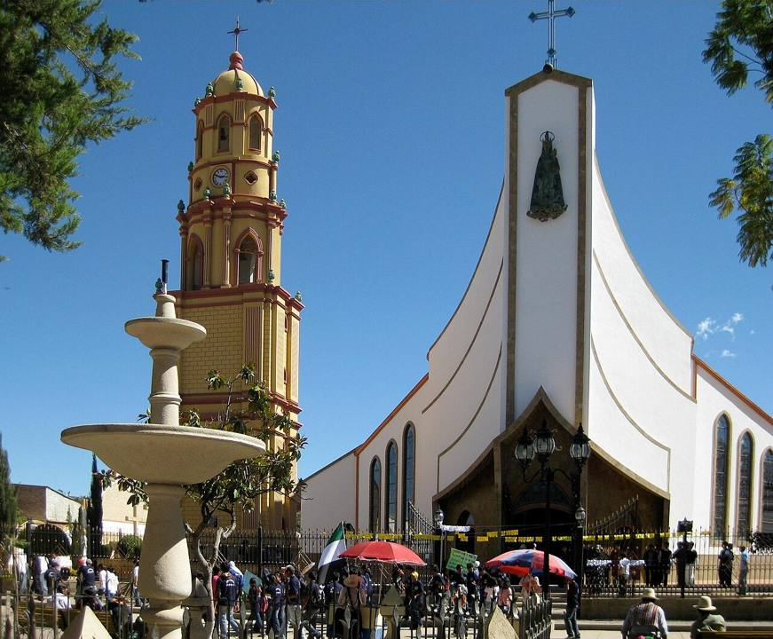
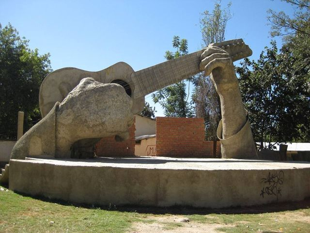
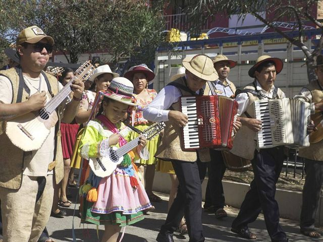
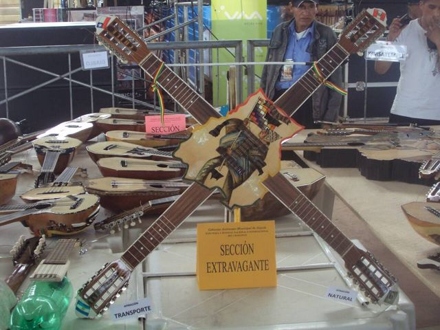
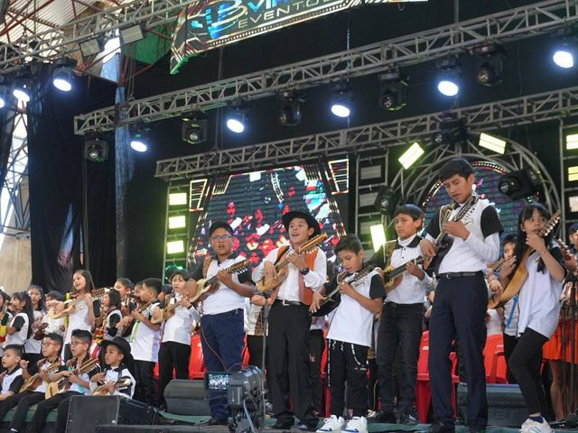
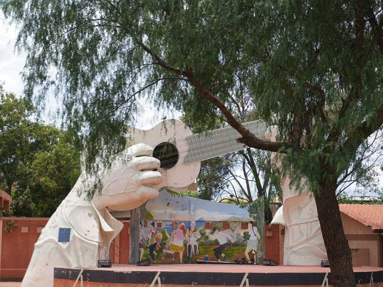
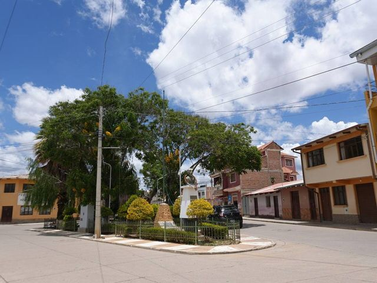

Aiquile
Departamento de Cochabamba · Cultura e historia

Aiquile es un pequeño pueblo de valle, cálido y seco, al sur del departamento de Cochabamba. Es conocido en todo el país como la capital nacional del charango, la pequeña guitarra andina de diez cuerdas: sus luthiers los fabrican desde hace generaciones y tiene un museo dedicado al instrumento. A principios de noviembre, la Feria y Festival Internacional del Charango reúne a músicos y constructores de toda Bolivia. Una parada agradable y muy local en el camino entre Cochabamba y Sucre.
Qué hacer
- Museo Nacional del Charango
- Talleres de luthiers (se puede encargar un charango)
- Feria y Festival del Charango, a principios de noviembre
- Catedral y plaza principal
Qué comer
- Picante mixtoPlato con varias carnes (pollo, lengua, res) en salsa de ají, con chuño y arroz. Para los que aman el picante.
- ChicharrónCerdo cocido en su propia grasa hasta dorarse, con mote y chuño. El plato del domingo.
- ChichaBebida fermentada de maíz, algo ácida, servida en tutumas. Se encuentra en las chicherías marcadas con una bandera blanca.
También aquí
- Fiestas Festival del charango de AiquileA principios de noviembre, músicos y luthiers de toda Bolivia se encuentran en la capital del charango para concursos y conciertos.
- Artesanía y mercados Charangos de AiquileLa pequeña guitarra andina de diez cuerdas, hecha por los luthiers de Aiquile. Se puede encargar uno a medida.
Cómo llegar a Aiquile
Mizque Carretera (bus, auto) · 1 h 30
Minibús o bus.
Cochabamba Carretera (bus, auto) · 4 a 5 h
Buses y minibuses desde Cochabamba, algunas salidas al día.
Sucre Carretera (bus, auto) · 5 a 6 h
Los buses Cochabamba – Sucre pasan por Aiquile: pide subir o bajar.
Fotos de Aiquile












Otros lugares de la región
 CochabambaLa «ciudad de la eterna primavera» y capital gastronómica del país.
CochabambaLa «ciudad de la eterna primavera» y capital gastronómica del país. Laguna AlalayUna gran laguna en el corazón de Cochabamba, refugio de aves al pie de los cerros.
Laguna AlalayUna gran laguna en el corazón de Cochabamba, refugio de aves al pie de los cerros. Parque Nacional TunariLas montañas justo encima de la ciudad: lagunas de altura y la cumbre del Tunari (5035 m).
Parque Nacional TunariLas montañas justo encima de la ciudad: lagunas de altura y la cumbre del Tunari (5035 m). Valle Alto: Tarata y ClizaPueblos coloniales del valle, mercados y chicha.
Valle Alto: Tarata y ClizaPueblos coloniales del valle, mercados y chicha. Quillacollo e Inca RakayRuinas incas encima de Sipe Sipe, y Quillacollo, ciudad de la Urkupiña.
Quillacollo e Inca RakayRuinas incas encima de Sipe Sipe, y Quillacollo, ciudad de la Urkupiña. Parque Nacional TorotoroHuellas de dinosaurio, un cañón espectacular y la caverna de Umajalanta.
Parque Nacional TorotoroHuellas de dinosaurio, un cañón espectacular y la caverna de Umajalanta. IncallajtaEl sitio inca más grande de Bolivia, en un valle aislado.
IncallajtaEl sitio inca más grande de Bolivia, en un valle aislado. TotoraPueblito colonial muy bien conservado en la carretera antigua a Santa Cruz.
TotoraPueblito colonial muy bien conservado en la carretera antigua a Santa Cruz. MizquePueblo colonial de un valle cálido, tierra de la paraba frente roja.
MizquePueblo colonial de un valle cálido, tierra de la paraba frente roja.